武器皮肤
武器皮肤为剑、斧、镐、锄、铲和矛提供外观，通过对应的原初物品选择并定型。
获取与使用
在 /shop 购买对应原初物品，放在主手使用，选择外观并预览。确认后获得金质武器或工具，所选外观固定。操作见特殊道具。
皮肤通过资源包显示。名称、手持模型与物品栏模型按各外观定义，具体组件可在下方模型定义中查看。
剑
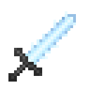
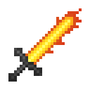
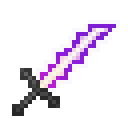
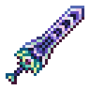
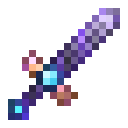
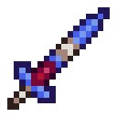
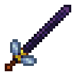
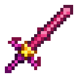
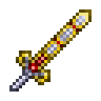
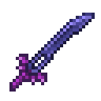
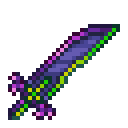
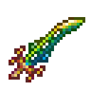
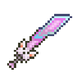
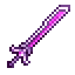
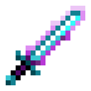
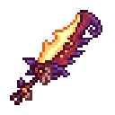
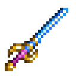
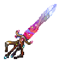
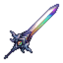
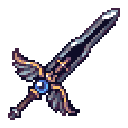
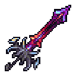
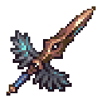
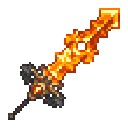
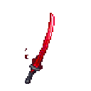
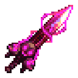
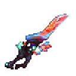
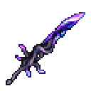
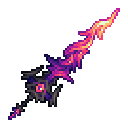
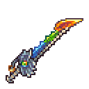
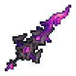
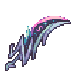
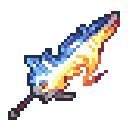
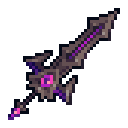
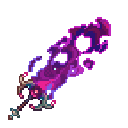
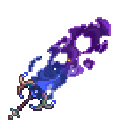
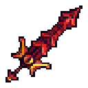
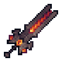
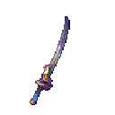
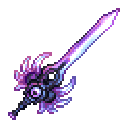
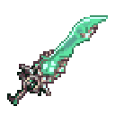
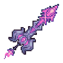
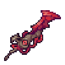
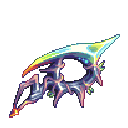
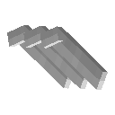
模型定义
| item_name | 模型 |
|---|---|
| 龙霜骨血剑 | {"type":"minecraft:model","model":"contribution:item/weapon_skin/sword/dragon_sword_ice"} |
| 龙炎骨血剑 | {"type":"minecraft:model","model":"contribution:item/weapon_skin/sword/dragon_sword_fire"} |
| 龙霆骨血剑 | {"type":"minecraft:model","model":"contribution:item/weapon_skin/sword/dragon_sword_lightning"} |
| 天顶剑 | {"type":"minecraft:model","model":"contribution:item/weapon_skin/sword/zenith"} |
| 下界合金杀手 | {"type":"minecraft:model","model":"contribution:item/weapon_skin/sword/netherite_killer_sword"} |
| 附魔剑 | {"type":"minecraft:model","model":"contribution:item/weapon_skin/sword/enchanted_sword"} |
| 养蜂人 | {"type":"minecraft:model","model":"contribution:item/weapon_skin/sword/bee_keeper"} |
| 星怒 | {"type":"minecraft:model","model":"contribution:item/weapon_skin/sword/starfury"} |
| 断钢剑 | {"type":"minecraft:model","model":"contribution:item/weapon_skin/sword/excalibur"} |
| 永夜刃 | {"type":"minecraft:model","model":"contribution:item/weapon_skin/sword/nights_edge"} |
| 真·永夜刃 | {"type":"minecraft:model","model":"contribution:item/weapon_skin/sword/true_nights_edge"} |
| 泰拉刃 | {"type":"minecraft:model","model":"contribution:item/weapon_skin/sword/terra_blade"} |
| 彩虹猫之刃 | {"type":"minecraft:model","model":"contribution:item/weapon_skin/sword/meowmere"} |
| 山铜剑 | {"type":"minecraft:model","model":"contribution:item/weapon_skin/sword/orichalcum_sword"} |
| 虚空之蚀 | {"type":"minecraft:model","model":"contribution:item/weapon_skin/sword/void_touched_blade"} |
| 飞龙 | {"type":"minecraft:model","model":"contribution:item/weapon_skin/sword/flying_dragon"} |
| 星光 | {"type":"minecraft:model","model":"contribution:item/weapon_skin/sword/starlight"} |
| 鸿蒙方舟 | {"type":"minecraft:model","model":"contribution:item/weapon_skin/sword/ark_of_the_cosmos"} |
| 绚辉圣剑 | {"type":"minecraft:model","model":"contribution:item/weapon_skin/sword/iridescent_excalibur"} |
| 雄伟之护 | {"type":"minecraft:model","model":"contribution:item/weapon_skin/sword/majestic_guard"} |
| 禅心剑 | {"type":"minecraft:model","model":"contribution:item/weapon_skin/sword/ataraxia"} |
| 炽天使 | {"type":"minecraft:model","model":"contribution:item/weapon_skin/sword/seraphim"} |
| 龙破斩 | {"type":"minecraft:model","model":"contribution:item/weapon_skin/sword/draconic_destruction"} |
| 鬼妖村正 | {"type":"minecraft:model","model":"contribution:item/weapon_skin/sword/murasama"} |
| 破坏重剑 | {"type":"minecraft:model","model":"contribution:item/weapon_skin/sword/devastation"} |
| 元素方舟 | {"type":"minecraft:model","model":"contribution:item/weapon_skin/sword/ark_of_the_elements"} |
| 巨剑夜光 | {"type":"minecraft:model","model":"contribution:item/weapon_skin/sword/darklight_greatsword"} |
| 破灭魔王剑 | {"type":"minecraft:model","model":"contribution:item/weapon_skin/sword/devils_devastation"} |
| 无限大地 | {"type":"minecraft:model","model":"contribution:item/weapon_skin/sword/earth"} |
| 崇高誓约之剑 | {"type":"minecraft:model","model":"contribution:item/weapon_skin/sword/exalted_oathblade"} |
| 宙能波纹剑 | {"type":"minecraft:model","model":"contribution:item/weapon_skin/sword/excelsus"} |
| 炎霜之刃 | {"type":"minecraft:model","model":"contribution:item/weapon_skin/sword/flarefrost_blade"} |
| 誓约与禁忌之刃 | {"type":"minecraft:model","model":"contribution:item/weapon_skin/sword/forbidden_oathblade"} |
| 银河·巨蟹座 | {"type":"minecraft:model","model":"contribution:item/weapon_skin/sword/galaxia2"} |
| 银河·摩羯座 | {"type":"minecraft:model","model":"contribution:item/weapon_skin/sword/galaxia"} |
| 地狱龙锋 | {"type":"minecraft:model","model":"contribution:item/weapon_skin/sword/hellkite"} |
| 旧神阔剑 | {"type":"minecraft:model","model":"contribution:item/weapon_skin/sword/old_lord_claymore"} |
| 全能之刃 | {"type":"minecraft:model","model":"contribution:item/weapon_skin/sword/omniblade"} |
| 携序之剑 | {"type":"minecraft:model","model":"contribution:item/weapon_skin/sword/orderbringer"} |
| 月炎之锋 | {"type":"minecraft:model","model":"contribution:item/weapon_skin/sword/stellar_striker"} |
| 暴政 | {"type":"minecraft:model","model":"contribution:item/weapon_skin/sword/the_enforcer"} |
| 血石斩切刃 | {"type":"minecraft:model","model":"contribution:item/weapon_skin/sword/the_mutilator"} |
| 星流之刃 | {"type":"minecraft:model","model":"contribution:item/weapon_skin/sword/exoblade"} |
| 金刚狼爪 | {"type":"minecraft:model","model":"contribution:item/weapon_skin/sword/wolverine"} |
斧
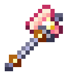
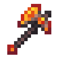
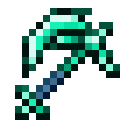
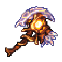
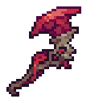
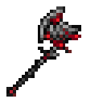
模型定义
| item_name | 模型 |
|---|---|
| 玫瑰石英斧 | {"type":"minecraft:model","model":"contribution:item/weapon_skin/axe/gilded_quartz_axe"} |
| 余烬斧 | {"type":"minecraft:model","model":"contribution:item/weapon_skin/axe/emberstone_axe"} |
| 海王斧 | {"type":"minecraft:model","model":"contribution:item/weapon_skin/axe/neptunium_axe"} |
| 焚罪飞斧 | {"type":"minecraft:model","model":"contribution:item/weapon_skin/axe/seeking_scorcher"} |
| 血沫重斧 | {"type":"minecraft:model","model":"contribution:item/weapon_skin/axe/bloodsoaked_crasher"} |
| 嗜血狂斧 | {"type":"minecraft:model","model":"contribution:item/weapon_skin/axe/blood_lust_cluster"} |
| 元素之斧 | {"type":"minecraft:model","model":"contribution:item/weapon_skin/axe/elemental_axe"} |
| 银河溃灭者 | {"type":"minecraft:model","model":"contribution:item/weapon_skin/axe/galaxy_smasher"} |
| 格拉克斯 | {"type":"minecraft:model","model":"contribution:item/weapon_skin/axe/grax"} |
| 炼狱 | {"type":"minecraft:model","model":"contribution:item/weapon_skin/axe/inferna_cutter"} |
| 星云锤斧 | {"type":"minecraft:model","model":"contribution:item/weapon_skin/axe/nebula_hamaxe"} |
| 幽灵锤斧 | {"type":"minecraft:model","model":"contribution:item/weapon_skin/axe/spectre_hamaxe"} |
| 地壳斧正者 | {"type":"minecraft:model","model":"contribution:item/weapon_skin/axe/tectonic_truncator"} |
| 钛金战斧 | {"type":"minecraft:model","model":"contribution:item/weapon_skin/axe/titanium_waraxe"} |
镐
模型定义
| item_name | 模型 |
|---|---|
| 终级碾碎器 | {"type":"minecraft:model","model":"contribution:item/weapon_skin/pickaxe/crystyl_crusher"} |
| 创世镐 | {"type":"minecraft:model","model":"contribution:item/weapon_skin/pickaxe/genesis_pickaxe"} |
| 星云镐 | {"type":"minecraft:model","model":"contribution:item/weapon_skin/pickaxe/nebula_pickaxe"} |
| 星旋镐 | {"type":"minecraft:model","model":"contribution:item/weapon_skin/pickaxe/vortex_pickaxe"} |
| 锯刃镐 | {"type":"minecraft:model","model":"contribution:item/weapon_skin/pickaxe/picksaw"} |
锄
模型定义
| item_name | 模型 |
|---|---|
| 掠星镰 | {"type":"minecraft:model","model":"contribution:item/weapon_skin/hoe/celestial_reaper"} |
| 死神擢升 | {"type":"minecraft:model","model":"contribution:item/weapon_skin/hoe/deaths_ascension"} |
| 旧神星镰 | {"type":"minecraft:model","model":"contribution:item/weapon_skin/hoe/scythe_of_the_abandoned_god"} |
| 旧神巨镰 | {"type":"minecraft:model","model":"contribution:item/weapon_skin/hoe/scythe_of_the_old_god"} |
| 纳米黑死神 | {"type":"minecraft:model","model":"contribution:item/weapon_skin/hoe/nanoblack_reaper"} |
| 邪恶收割者 | {"type":"minecraft:model","model":"contribution:item/weapon_skin/hoe/baleful_harvester"} |
| 女妖之爪 | {"type":"minecraft:model","model":"contribution:item/weapon_skin/hoe/banshee_hook"} |
| 时空术士之镰 | {"type":"minecraft:model","model":"contribution:item/weapon_skin/hoe/chronomancers_scythe"} |
| 精元劫掠者 | {"type":"minecraft:model","model":"contribution:item/weapon_skin/hoe/essence_flayer"} |
| 熔岩切碎者 | {"type":"minecraft:model","model":"contribution:item/weapon_skin/hoe/molten_amputator"} |
| 灵魂收割者 | {"type":"minecraft:model","model":"contribution:item/weapon_skin/hoe/soul_harvester"} |
铲
模型定义
| item_name | 模型 |
|---|---|
| 铁铲 | {"type":"minecraft:model","model":"minecraft:item/iron_shovel"} |
矛
模型定义
| item_name | 模型 |
|---|---|
| 破晓之光 | {"type":"minecraft:select","property":"minecraft:display_context","cases":[{"when":["gui","ground","fixed","on_shelf"],"model":{"type":"minecraft:model","model":"contribution:item/weapon_skin/spear/gui/day_break"}}],"fallback":{"type":"minecraft:model","model":"contribution:item/weapon_skin/spear/day_break"}} |
| 北极 | {"type":"minecraft:select","property":"minecraft:display_context","cases":[{"when":["gui","ground","fixed","on_shelf"],"model":{"type":"minecraft:model","model":"contribution:item/weapon_skin/spear/gui/north_pole"}}],"fallback":{"type":"minecraft:model","model":"contribution:item/weapon_skin/spear/north_pole"}} |
| 翠芒尖枪 | {"type":"minecraft:select","property":"minecraft:display_context","cases":[{"when":["gui","ground","fixed","on_shelf"],"model":{"type":"minecraft:model","model":"contribution:item/weapon_skin/spear/gui/botanic_piercer"}}],"fallback":{"type":"minecraft:model","model":"contribution:item/weapon_skin/spear/botanic_piercer"}} |
| 巨龙之怒 | {"type":"minecraft:select","property":"minecraft:display_context","cases":[{"when":["gui","ground","fixed","on_shelf"],"model":{"type":"minecraft:model","model":"contribution:item/weapon_skin/spear/gui/dragon_rage"}}],"fallback":{"type":"minecraft:model","model":"contribution:item/weapon_skin/spear/dragon_rage"}} |
| 元素长枪 | {"type":"minecraft:select","property":"minecraft:display_context","cases":[{"when":["gui","ground","fixed","on_shelf"],"model":{"type":"minecraft:model","model":"contribution:item/weapon_skin/spear/gui/elemental_lance"}}],"fallback":{"type":"minecraft:model","model":"contribution:item/weapon_skin/spear/elemental_lance"}} |
| 深渊潮涌 | {"type":"minecraft:select","property":"minecraft:display_context","cases":[{"when":["gui","ground","fixed","on_shelf"],"model":{"type":"minecraft:model","model":"contribution:item/weapon_skin/spear/gui/enebreus_tides"}}],"fallback":{"type":"minecraft:model","model":"contribution:item/weapon_skin/spear/enebreus_tides"}} |
| 镀金鸟喙 | {"type":"minecraft:select","property":"minecraft:display_context","cases":[{"when":["gui","ground","fixed","on_shelf"],"model":{"type":"minecraft:model","model":"contribution:item/weapon_skin/spear/gui/gilded_proboscis"}}],"fallback":{"type":"minecraft:model","model":"contribution:item/weapon_skin/spear/gilded_proboscis"}} |
| 天底 | {"type":"minecraft:select","property":"minecraft:display_context","cases":[{"when":["gui","ground","fixed","on_shelf"],"model":{"type":"minecraft:model","model":"contribution:item/weapon_skin/spear/gui/nadir"}}],"fallback":{"type":"minecraft:model","model":"contribution:item/weapon_skin/spear/nadir"}} |
| 暗夜凝视 | {"type":"minecraft:select","property":"minecraft:display_context","cases":[{"when":["gui","ground","fixed","on_shelf"],"model":{"type":"minecraft:model","model":"contribution:item/weapon_skin/spear/gui/nights_gaze"}}],"fallback":{"type":"minecraft:model","model":"contribution:item/weapon_skin/spear/nights_gaze"}} |
| 半影裂片 | {"type":"minecraft:select","property":"minecraft:display_context","cases":[{"when":["gui","ground","fixed","on_shelf"],"model":{"type":"minecraft:model","model":"contribution:item/weapon_skin/spear/gui/shard_of_antumbra"}}],"fallback":{"type":"minecraft:model","model":"contribution:item/weapon_skin/spear/shard_of_antumbra"}} |
| 宇宙暗流 | {"type":"minecraft:select","property":"minecraft:display_context","cases":[{"when":["gui","ground","fixed","on_shelf"],"model":{"type":"minecraft:model","model":"contribution:item/weapon_skin/spear/gui/stream_gouge"}}],"fallback":{"type":"minecraft:model","model":"contribution:item/weapon_skin/spear/stream_gouge"}} |
| 微元劫裂者 | {"type":"minecraft:select","property":"minecraft:display_context","cases":[{"when":["gui","ground","fixed","on_shelf"],"model":{"type":"minecraft:model","model":"contribution:item/weapon_skin/spear/gui/the_atom_splitter"}}],"fallback":{"type":"minecraft:model","model":"contribution:item/weapon_skin/spear/the_atom_splitter"}} |
| 恣睢 | {"type":"minecraft:select","property":"minecraft:display_context","cases":[{"when":["gui","ground","fixed","on_shelf"],"model":{"type":"minecraft:model","model":"contribution:item/weapon_skin/spear/gui/violence"}}],"fallback":{"type":"minecraft:model","model":"contribution:item/weapon_skin/spear/violence"}} |
| 火山之矛 | {"type":"minecraft:select","property":"minecraft:display_context","cases":[{"when":["gui","ground","fixed","on_shelf"],"model":{"type":"minecraft:model","model":"contribution:item/weapon_skin/spear/gui/vulcanite_lance"}}],"fallback":{"type":"minecraft:model","model":"contribution:item/weapon_skin/spear/vulcanite_lance"}} |
| 狂龙翼火 | {"type":"minecraft:select","property":"minecraft:display_context","cases":[{"when":["gui","ground","fixed","on_shelf"],"model":{"type":"minecraft:model","model":"contribution:item/weapon_skin/spear/gui/wrathwing"}}],"fallback":{"type":"minecraft:model","model":"contribution:item/weapon_skin/spear/wrathwing"}} |
| 日蚀之陨 | {"type":"minecraft:select","property":"minecraft:display_context","cases":[{"when":["gui","ground","fixed","on_shelf"],"model":{"type":"minecraft:model","model":"contribution:item/weapon_skin/spear/gui/eclipses_fall"}}],"fallback":{"type":"minecraft:model","model":"contribution:item/weapon_skin/spear/eclipses_fall"}} |